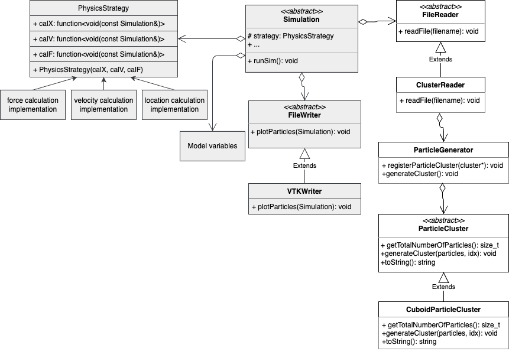

The molecular dynamics SS24 code base of Group F.
You can find the doxygen documentation hosted on https://noahpy.github.io/MolSim-SS24/.
Table of Contents
- Group members
- Quickstart
- Build instructions
- Run instructions
- Generate Doxygen documentation
- Run tests
- Run benchmarks
- Format code
- Open man page
- Documentation
- Project structure
- Folder structure
Group members
Quickstart
Build instructions
To build the project, run the following commands:
To build without doxygen and benchmarks run
instead.
Run instructions
To run the project (in general), run the following command:
Assignment 1 simulation
Assignment 2 simulation
For more information about arguments and default settings, type:
or read the man page
Generate Doxygen documentation
To generate the Doxygen documentation, run the following command:
This will generate the documentation into the folder doxys_documentation.
Run tests
To build the tests run:
To run the tests, run the following command:
Or alternatively with ctest:
Run benchmarks
The benchmarks are run using Google benchmark. Build:
Run:
Format code
If your system has clang-format installed, the target clangformat will be created. You can then run:
to format the code.
Open man page
To see more details on how to use the program, you can look at our man page. Enter the project root and then run:
Documentation
Project structure
The project is structured as follows:

Note that this is not a perfect UML diagram, but rather a visualization of the broad structure of the project.**Simulation**
- Any kinds of a simulations are represented as a child class of the
Simulationclass - Any simulation instance defines the
runSim()function, which uses the I/O classes (FileReader,FileWriter), thePhysicsStrategyclass and the model variables passed to it to calculate the simulation through time. - Child simulations might extend with new model varibales their parent simulations.
**PhysicsStrategy**
- Strategy interface to different implementation of strategy functions
- Strategy functions are interchangable / compareable
**FileWriter**
- Template method class defining a common interface of different writers
**FileReader**
- Template method class defining a common interface of different readers
- Currently not abstract yet, as only one reader is existant
**ParticleCluster**
- Represents a cluster of particles that can be used to initialize the simulation
- Based on an abstract
ParticleClusterclass - Child classes include e.g.
CuboidParticleClusterused in problem sheet 2
Folder structure
This section describes the folder strcuture of this project:
tests: tests of the projectsrc: source files of the projectsrc/io: all source files relating to I/Osrc/models: all source files relating to classes representing parts of the modelsrc/models/generators: all source files related to generating initial particle clusters
src/physics: all source files relating to physical calculationssrc/simulation: all source files relating to theSimlationclasssrc/MolSim.cpp: source file holding main function